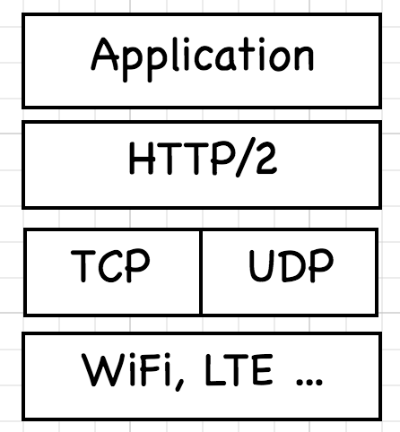
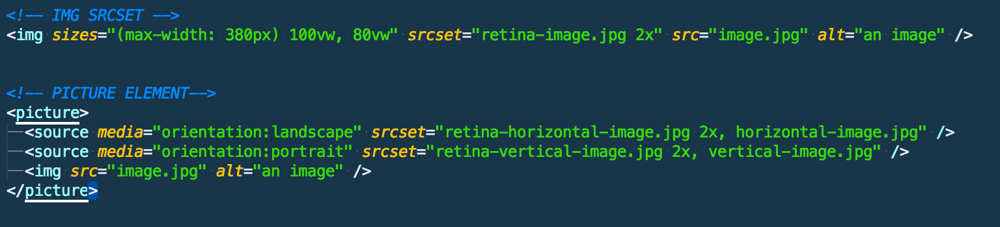
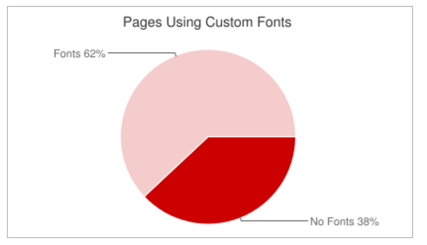

Turbo-charge your Web application
12 Aug 2016
Gabriel Cziprusz
@WalmartLabs
@gcziprusz
Website performance is important !
You may be thinking:
this is old news
We have been hearing that for years
Forrester research shows that 47% of users expect pages to load in two seconds or less.
frustrated users will likely seek alternatives
⌘ + T
SEO ranking is affected by page load speed
Speed = competitive advantage
So....
why is this content relevant ?
#1
We all know that it's important, yet experience frustrating performance on the web every day
#2
Our performance best practices need to be periodically re-examined
the invisible problem
Visit our site's from the office fastest Internet
have to look for it
it's everyone problem
What is fast?

Onload is easy to measure but not the whole story
Depends on the goals of the application
Twitter's Time to first tweet
GMAIL

measure performance
& establish a baseline
make and keep the site fast!
Synthetic Measurement
&
Real User Monitoring (RUM)
webpagetest.org
build integration
page speed index
performance budget
ratcheting
Synthetic Measurement cons
real world performance depends on many other factors
geographic diversity, browsers, cache state
browsers navigation API
dashboard to show trends
The real win if you can tie it with business metrics
valuable only if people care about them
Build a performance culture
Publish communication about performance wins
Use site load video comparisons
#2
Our performance best practices need to be periodically re-examined
SPDY > HTTP/2
latency vs bandwidth
ref. Ilya Grigorik, Yesterday's perf best-practices are today's HTTP/2 anti-patterns - Velocity 2015
Latency matters more than bandwidth
Can't make bit travel faster
Evergreen Optimizations
- Eliminate round-trips
- Make the distance shorter
- Reduce the number of bits shipped over the wire...
What optimization to start with?
It depends
in general 80% FE / 20% BE
images > 50% FE of weight
IMAGE optimizations
Vector vs Raster
Lossless vs Lossy
Indexed vs Direct
PNG-8 (ll&i), PNG-24 (ll&d), webp (ll&l&d), gif (ll&i), jpeg (l&d)
responsive images
deliver the best quality usable by the device, but nothing more
image metadata
web-fonts
subset + compress
CDNs
pops all over the (world)
CDNs
CAN YOU HTTP2 without SSL ... theoretically yes practically NO
HTTPS HTTP2 even better can terminate SSL session
caching
the fastest request is the one you do not have to make
HTTP standard
forever cache + version-ed assets
Domain Sharding
3 concepts + HTTP1.1 vs HTTP2
- DNS lookups
- HTTP 1.1 Keep-Alive
- active connections/domain
Bundling
150 JS source files
costly cache invalidations
Bundling
gmail bundle invalidation causes DoS
pre-warming cache
do only a few bundles
Minification
human readable format V8 does not care
long var names function names
Inlining
breaks caching
base 64 encoded image ++ 30%
HTTP/2 > server push
compression
GZIP , deflate
what to GZIP
anti-virus virus corner-case
Flushing the Document Early
Flushing the Document Early
Transfer-Encoding: chunked
- avoid: expressions, universal rules * {…} , @import
- uncss + minify + cssstats.com
On the horizon
QUIC
Chrome extension HTTP/2 and SPDY indicator
chrome://flags/#enable-quic
Service Workers
- use fastest CDN race
- prioritize resources
- delta compression
- drawing images locally